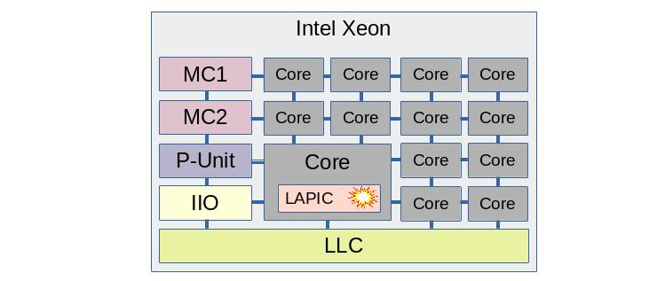
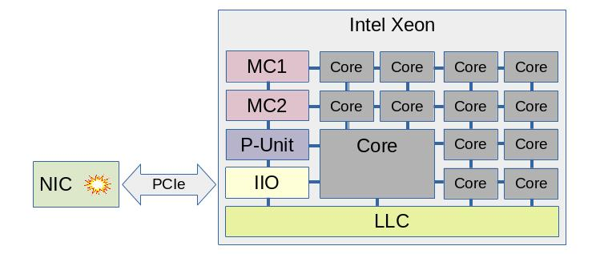

How it works
Table of Contents
1 Principle of operation
Here is how wult works at a very high level.
- Schedule a delayed interrupt to happen at a future time LaunchTime.
- Let the CPU enter a C-state, where CPU stops executing instructions and saves power.
- At LaunchTime, the delayed interrupt fires and the CPU starts exiting the C-state. This process will take some time.
- When the CPU starts executing instructions, we take the time after idle timestamp (TAI).
- The C-state exit latency is TAI - LaunchTime.
This process is repeated tens or hundreds of thousands of times and the data are collected in a CSV file. Wult provides a capability for analyzing the CSV file (finding the median, percentiles, etc) as well as a capability for visualizing the test results (scatter plots, histograms).
1.2. Measured CPU
By default, wult measures C-state latency of CPU 0 (the first CPU you'll see in /proc/cpuinfo). The delayed interrupts are affinitized to the measured CPU. However, you can measure any other CPU as well - there is a command line option for this. But only one CPU is measured at a time.
1.3 Measurement methods
Today wult supports three measurement methods: hrt, tdt, and nic. All of these methods measure C-state latency, but they use different delayed interrupt sources.
- The hrt method uses Linux kernel High Resolution Timers (HRT) for scheduling delayed interrupts. HRT is a standard Linux kernel subsystem providing an API for arming a timer. On modern Intel hardware, HR timers are backed by TSC deadline timers CPU feature, which is part of CPU's LAPIC block. But the timers may also be backed by the "legacy" LAPIC timers as well. This is, however, opaque to wult's hrt method - it just uses the HRT API.
- The tdt method stands for "TSC deadline timers". This method uses the TSC deadline timer CPU feature for scheduling delayed interrupts. Unlike the hrt method, tdt directly uses some of the hardware registers in order to improve accuracy. However, the tdt method is more "hacky" comparing to the hrt method, and it has much less chances to ever be merged upstream. Please, use the hrt method, unless you have a specific reason to use tdt.
- The nic method stands for "Network Interface Card", and it uses a network card for as a delayed interrupts source. At this moment, only one type of NIC is supported: Intel I210. Since delayed interrupts are originated from a PCIe NIC, this method allows for measuring things like PCIe ASPM delay. However, this method requires an I210 NIC to be installed on the measured system.
Please, refer to this section for more information on how C-state measurement results depend on the delayed interrupt source.
2 Interrupt source
Measuring C-state wake latency is based on delayed interrupts, and today wult supports two delayed interrupt sources: TSC deadline timer/LAPIC timer (hrt and tdt methods) and Intel I210 PCIe NIC (nic method).
2.1 Timer
In case of the hrt and tdt wult measurement methods, the delayed events are scheduled by simply arming a local CPU timer.
All modern Intel CPUs support the TSC deadline timer feature, which is provided by the LAPIC block. This feature allows for scheduling an interrupt in TSC cycles: the OS basically programs the TSC counter value for the CPU to generate an interrupt at. TSC (Time Stamp Counter) increments every CPU cycle, so this is a very high-resolution timer.
On older Intel CPUs, the LAPIC block does not support TSC deadline timers, in which case Linux kernel uses coarser "LAPIC timers". Linux kernel may fall-back to using LAPIC timers if it detects that TSC is unstable or if Linux TSC deadline timers support was disabled by the user.
This hrt wult method should work with both TSC deadline and legacy LAPIC timers. The tdt wult method works only with TSC deadline timers.
The picture illustrates a timer interrupt on an Intel Xeon chip. The chip contains many cores, but only one core is being measured (if hyper-threading is enabled, one hyper-thread is measured). This core has the LAPIC block, and this block generates the interrupts which wult's hrt and tdt methods use for measuring C-state latency.
Just for reference: MC stands for "Memory Controller", LLC stands for Last Level Cache (shared between the cores). P-unit is a microcontroller responsible for power and performance features like C-states, P-states, etc.
2.2 NIC
In case of the nic wult method, the delayed interrupt source is the Intel I210 PCIe network card (NIC).
Notice that the interrupt source is much further from the measured core in this case. The interrupt signal has to travel via PCIe link(s) and bridge(s) into the IIO block, and then it gets routed to the measured CPU.
Today, only the Intel I210 NIC is supported, but more NIC types may be supported in the future. This NIC has a built-in crystal oscillator and provides an independent clock, which can be read by the CPU. The CPU can program the NIC to generate an interrupt when NIC's clock counter reaches certain value.
2.3 Timer vs Nic
Both hrt/tdt and nic methods measure CPU C-state latency, and they may produce similar or different results depending various factors. Let's look at some of them.
2.3.1 PCIe ASPM
PCIe ASPM (Active State Power Management) is a PCIe power management feature, described in PCIe specifications and supported by many Intel chips. This feature is about PCI links power management - when a link is not used, it can be sent into a low power state such as L1. In this state the link cannot be used, so when there are data to transfer, the link transitions to the L0 state. This transition requires link re-training and takes time.
PCIe ASPM is typically transparent to Linux - the hardware and firmware manages link states automatically. However, Linux can enable and disable ASPM for PCIe devices.
Enabling PCIe ASPM for the I210 NIC will increase the measured C-state latency when using the nic method, and won't affect the measured C-state latency when using hrt/tdt methods.
Here is a diff for an Intel Xeon E5-2697 v2 system. It compares C-state latency for PCIe ASPM enabled and disabled configurations. The deepest C-state was C6. The median wake latency is 82.6us (ASPM on) and 73.8us (ASPM off), which means that PCIe ASPM adds about 8.8 microseconds to the median.
Here is a small decoder for the "ivt-nic-c6-hfm-noaspm" name:
- ivt - comes from IvyTown, name of the server platform that we tested.
- nic - the result was produced using the nic method.
- c6 - the deepest C-state Linux was allowed to request when we ran wult was "C6".
- hfm - comes from "High Frequency Mode", same as base frequency. This means that in this test we locked CPU frequency to HFM, so CPU frequency transitions were disabled.
- noaspm - PCIe ASPM was disabled.
2.3.1.1 A word of warning
The Intel I210 network card is a relatively old design - it is a PCIe Gen 2 card, while modern Intel CPUs are PCIe Gen 4 and Gen 5. Therefore, this network card may not be a perfect device for measuring PCI-related delays. We did not have time to support a more modern NIC, but this should generally be possible.
2.3.2 C-state pre-wake
Some Intel CPUs have able to pre-wake the CPU from a C-state if there is a timer firing soon. The P-unit on such systems is timer-aware and optimizes some of the C-states. Not every Intel chip, however, has this feature.
Interrupts from a NIC can not be predicted by the P-unit and therefore, the C-state pre-wake feature cannot reduce the measured C-state latency.
Here is an example test result for an Intel Xeon E5-2697 v2 system. It is actually a diff comparing C-state latency for the nic and tdt measurement methods. The deepest C-state was C6. Notice that the median wake latency is 73.8us (nic) and 17.6us (timer). The timer method shows about 76% latency reduction.
Note, you can disable the pre-wake feature and measure the "unoptimized" C-state latency even with the hrt or tdt methods (e.g., verified on IceLake Xeon). You can do this using the pepc tool.
2.3.3 PCI topology
When using the nic measurement method, the location of the NIC in the PCIe matters. E.g., consider a 2-socket server system with the following PCIe slots.
- Slot A is connected directly to the IIO block (part of the "north complex") of socket 0.
- Slot B is connected directly to the IIO block of socket 1.
- Slot C is connected to PCH, which is connected to socket 0.
Suppose we are measuring C-state latency of CPU0, which is on core 0 of socket 0. In this case Slot A provides the shortest and fastest path. Slot B provides longer and slower path, because interrupts (typically MSI messages) will be delivered to socket 1, and then to socket 0. And slot C provides provides a longer path as well.